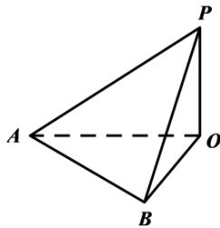

填空题
按本区原卷题号顺序排列。
浦东 · 第1题 ★☆☆☆☆ · 教师预估
不等式 x−2x< 0的解集是 .
考点：分式不等式解集。
难度依据：分式不等式；直接运用定义或基础公式，推理链短
核查说明：已人工阅读完整底稿题干及原解，未逐页对照正式PDF，分类不等于数学终审。
展开答案与解析
浦东 · 第2题 ★☆☆☆☆ · 教师预估
已知向量→a τ=(1,2),b=(m,1) ，若→a ⊥b ，则m =
考点：数量积求参数。
难度依据：平面向量垂直坐标条件；直接运用定义或基础公式，推理链短
核查说明：已人工阅读完整底稿题干及原解，未逐页对照正式PDF，分类不等于数学终审。
展开答案与解析
浦东 · 第3题 ★☆☆☆☆ · 教师预估
圆的方程为 ∣x2+y2−4x+6y+12=0 ，则该圆的半径为
考点：配方求圆半径。
难度依据：圆的一般方程化标准式；直接运用定义或基础公式，推理链短
核查说明：已人工阅读完整底稿题干及原解，未逐页对照正式PDF，分类不等于数学终审。
展开答案与解析
浦东 · 第4题 ★☆☆☆☆ · 教师预估
若 f(x)=cos(3x)cosx+sin(3x)sinx ，则函数 y=f(x) 的最小正周期为
考点：差角化简及周期。
难度依据：余弦差角与周期；直接运用定义或基础公式，推理链短
核查说明：已人工阅读完整底稿题干及原解，未逐页对照正式PDF，分类不等于数学终审。
展开答案与解析
浦东 · 第5题 ★★☆☆☆ · 教师预估
若关于x的方程 x2−x+m=0 的一个虚根的模为2，则实数m的值为
考点：韦达定理与虚根模。
难度依据：共轭虚根与模；需一次转化并结合定义域或几何条件计算
核查说明：已人工阅读完整底稿题干及原解，未逐页对照正式PDF，分类不等于数学终审。
展开答案与解析
浦东 · 第6题 ★☆☆☆☆ · 教师预估
设数列 {an} 为等差数列，其前n项和为 Sn ，已知 ∣a3+a15=2 ，则 S17
考点：等差对称项与前n项和。
难度依据：等差数列对称项与求和；直接运用定义或基础公式，推理链短
核查说明：已人工阅读完整底稿题干及原解，未逐页对照正式PDF，分类不等于数学终审。
展开答案与解析
浦东 · 第7题 ★★☆☆☆ · 教师预估
本题资料或解析有待核事项，预览不可作为已审定成品。
7(x−x1)10 的展开式中，常数项为
考点：通项指数与系数。
难度依据：二项展开常数项；需一次转化并结合定义域或几何条件计算
核查说明：题干首部混入编号7与异常字体，需清理但不改变十次方。；已人工阅读完整底稿题干及原解，未逐页对照正式PDF，分类不等于数学终审。
展开答案与解析
浦东 · 第8题 ★★☆☆☆ · 教师预估
设M(x,y)为抛物线 y˙2=4x 上任意一点，若x+2y+m的最小值为1，则m的值为
考点：抛物线代换与配方。
难度依据：抛物线上线性式最值；需一次转化并结合定义域或几何条件计算
核查说明：已人工阅读完整底稿题干及原解，未逐页对照正式PDF，分类不等于数学终审。
展开答案与解析
浦东 · 第9题 ★★☆☆☆ · 教师预估
李老师在整理建模小组10名学生的成绩时不小心遗失了一位学生的成绩，且剩余学生的成绩数据如下：5 6 6 7 7 7 8 9 9，但李老师记得这名学生的成绩恰好是本组学生成绩的第25百分位数，则这10名学生的成绩的方差为
考点：百分位数确定缺失值及方差。
难度依据：百分位数与方差；需一次转化并结合定义域或几何条件计算
核查说明：已人工阅读完整底稿题干及原解，未逐页对照正式PDF，分类不等于数学终审。
展开答案与解析
浦东 · 第10题 ★★★☆☆ · 教师预估
本题资料或解析有待核事项，预览不可作为已审定成品。

如图，某建筑物OP垂直于地面，从地面点A处测得建筑物顶部P的仰角为30∘，从地面点B处测得建筑物顶部P的仰角为 45∘ ，已知A、B相距100米， ∠AOB=60∘ ，则该建筑物 OP 高度约为米．（保留一位小数）
考点：俯仰角与余弦定理。
难度依据：仰角建模与余弦定理；需连接多个条件或多步模型转化
核查说明：解析有长串Omega OCR乱码，应回原PDF校复。；已人工阅读完整底稿题干及原解，未逐页对照正式PDF，分类不等于数学终审。
展开答案与解析
浦东 · 第11题 ★★★★☆ · 教师预估
本题资料或解析有待核事项，预览不可作为已审定成品。
已知→a、 b,c 为空间中三个单位向量， za⋅b=b⋅c=c⋅a=0 ，若向量 ⋅p} 满足 ∣p−2a∣=23 ∣p−2b∣=23 ，则向量 p 与向量 :c 夹角的最小值为 ．（用反三角表示）
考点：正交坐标、双球交线与夹角。
难度依据：正交空间向量与夹角最值；需参数分类、构造递推或综合最值分析
核查说明：求夹角的关键余弦分式与极值步骤严重乱码；需核清平方根及取等参数，不能直接发布。；已人工阅读完整底稿题干及原解，未逐页对照正式PDF，分类不等于数学终审。
展开答案与解析
浦东 · 第12题 ★★★★☆ · 教师预估
本题资料或解析有待核事项，预览不可作为已审定成品。
已知数列 {an}, a1=1,an∈{1,−1},(n≥2) ，并且前n项的和 ∣Sn 满足：
①存在小于1013的正整数t，使得 S2t+1=−1 ；
②对任意的正整数k和m，都有 ∣S2m−S2k−1∣≤1
则满足以上条件的数列 {Sn}(1≤n≤2025) 共有 个
考点：奇偶前缀和约束与构造计数。
难度依据：正负一数列前缀和限制；需参数分类、构造递推或综合最值分析
核查说明：本次仅核此字段，不代表全卷数学与视觉终审。；已人工阅读完整底稿题干及原解，未逐页对照正式PDF，分类不等于数学终审。
展开答案与解析
选择题
按本区原卷题号顺序排列。
浦东 · 第13题 ★☆☆☆☆ · 教师预估
已知集合 P={−1,1,3,5,7} ，集合 Q={x∣∣x−3∣>3} ，全集为R，则 P∩Q=()
A. {−1, 1}
B. {−1, 7}
C. {1,3,5,7}
D. {1, 3, 5}
考点：补集交集与绝对值不等式。
难度依据：集合补集交集与绝对值；直接运用定义或基础公式，推理链短
核查说明：已人工阅读完整底稿题干及原解，未逐页对照正式PDF，分类不等于数学终审。
展开答案与解析
浦东 · 第14题 ★★☆☆☆ · 教师预估
已知a、 b∈R, ，则 ρ^a>bρ^ 是 ∗lga>lgb′ ”的（ ）条件
A. 充分非必要条件
B. 必要非充分条件
C. 充要条件
D. 既非充分也非必要条件
考点：对数比较与定义域。
难度依据：充分必要条件；需一次转化并结合定义域或几何条件计算
核查说明：已人工阅读完整底稿题干及原解，未逐页对照正式PDF，分类不等于数学终审。
展开答案与解析
浦东 · 第15题 ★★★☆☆ · 教师预估
研究变量x，y得到一组成对数据 (xi,yi),i=1,2,⋯,n, ，先进行一次线性回归分析，接着增加一个数据 (xn+1,yn+1) ，其 ∀xn+1=n1∑i=1nxi,yn+1=n1∑i=1nyi ，再重新进行一次线性回归分析，则下列说法正确的是（ ）
A. 变量x与变量y的相关性变强
B. 相关系数r的绝对值变小
C. 线性回归方程 y=ax+b 不变
D. 拟合误差Q变大
考点：增加样本中心点后的回归不变性。
难度依据：线性回归和相关系数；需连接多个条件或多步模型转化
核查说明：已人工阅读完整底稿题干及原解，未逐页对照正式PDF，分类不等于数学终审。
展开答案与解析
浦东 · 第16题 ★★★★★ · 教师预估
本题资料或解析有待核事项，预览不可作为已审定成品。
已知圆锥曲线Γ的对称中心为原点O，若对于Γ上的任意一点A，均存在Γ上两点B，C，使得原点O到直线AB，AC和BC的距离都相等，则称曲线Γ为“完美曲线”．现有如下两个命题：
①任意椭圆都是“完美曲线”；②存在双曲线是“完美曲线”
下列判断正确的是（ ）
A. ①是真命题，②是假命题
B. ①是假命题，②是真命题
C. ①②都是真命题
D. ①②都是假命题
考点：圆锥曲线、内切圆构造与反例。
难度依据：完美曲线定义；需处理新定义或多对象联动，包含一般性证明及边界
核查说明：源解椭圆存在性“动态调半径”与双曲线否定均缺严密论证，分类不视为证明已完成。；已人工阅读完整底稿题干及原解，未逐页对照正式PDF，分类不等于数学终审。
展开答案与解析

解答题
按本区原卷题号顺序排列。
浦东 · 第17题 ★★★☆☆ · 教师预估
已知函数 y=f(x) 的表达式 f(x)=ex+11−a.
(1) (7分)若函数 y=f(x) 是奇函数，求实数a的值；
(2) (7分)对任意实数 ⋅x∈[−1,1] ，不等式 f(x)≤ 0恒成立，求实数a的取值范围
考点：(1)函数奇偶性求参数；(2)单调性求区间恒成立参数。
难度依据：指数函数奇偶性与恒成立；需连接多个条件或多步模型转化
核查说明：已人工阅读完整底稿题干及原解，未逐页对照正式PDF，分类不等于数学终审。
展开答案与解析
浦东 · 第18题 ★★★☆☆ · 教师预估
本题资料或解析有待核事项，预览不可作为已审定成品。
如图，四边形ABCD为长方形，PA⊥平面ABCD， AB=AP=2 ，AD = 3

(1) (7分)若E、F分别是PB、CD的中点，求证：EF∥平面PAD；
(2) (7分)边BC上是否存在点G，使得直线 PG. 与平面PAD所成的角的大小为 30∘? 若存在，求BG长；若不存在，说明理由
考点：(1)线面平行证明；(2)线面角与边上动点。
难度依据：线面平行及线面角；需连接多个条件或多步模型转化
核查说明：原解结论30度误识为130度；法一比例式分行破损，须校对。；已人工阅读完整底稿题干及原解，未逐页对照正式PDF，分类不等于数学终审。
展开答案与解析

浦东 · 第19题 ★★★★☆ · 教师预估
原始数据表已恢复；源解所用概率模型中的独立性条件尚待核实。
为测试A、B两款人工智能软件解答数学问题的能力，将100道难度相当的数学试题从1到100编号后随机分配给这两款软件测试．每道试题只被一款软件解答一次，并记录结果如下：
| 试题类别 |
A软件测试试题数量 |
A软件正确解答数量 |
B软件测试试题数量 |
B软件正确解答数量 |
| 几何试题 |
20 |
16 |
30 |
20 |
| 函数试题 |
30 |
24 |
20 |
18 |
(1) (4分)分别估计A软件、B软件能正确解答数学问题的概率；
(2) (4分)小浦准备用这两款软件来解决某次数学测试中的第12题（假设其难度和测试的100道题基本相同），但该题内容还未知，从已往情况来看，该题是几何题的概率为 31 ，是函数题的概率为 32 ．将频率视为概率，试通过计算来说明小浦应该用哪款软件解决这道试题？
(3) (6分)小浦决定采用这两款软件解答6道类似试题，其中几何、函数各3道，每道试题只用其中一款软件解答一次．将频率视为概率，小浦比较了这两款软件在解答几何和函数题上的正确率，决定用表现较好的那款软件解决其擅长的题型．用 X1、X2 分别表示这3道几何试题与3道函数试题被正确解答的个数，求随机变量 X1+X2 的数学期望和方差
考点：(1)频率估计概率；(2)全概率比较软件；(3)二项分布期望方差及独立性。
难度依据：频率估计全概率与二项分布；需参数分类、构造递推或综合最值分析
核查说明：第(3)问源解使用独立性，题干未显式给出各试题解答独立；本补丁仅恢复原表，不新增独立性假设。；题干测试结果表未保留；源解第二问条件事件G与补事件符号重复；第三问二项分布独立假设需回核原卷。；已人工阅读完整底稿题干及原解，未逐页对照正式PDF，分类不等于数学终审。
展开答案与解析
浦东 · 第20题 ★★★★★ · 教师预估
本题资料或解析有待核事项，预览不可作为已审定成品。
已知椭圆 C1 的方程为 3x2+y2=1，右顶点为 A，上顶点为 B，椭圆 C2 的中心位于坐标原点，两个椭圆的离心率相等。
(1) (4分) 若椭圆 C2 的方程是 a2x2+2ay2=1 (a>0)，焦点在 x 轴上，求 a 的值；
(2) (6分) 设椭圆 C2 的焦点在 x 轴上，直线 AB 与 C2 相交于点 C、D，若 ∣CD∣=3∣AB∣，求 C2 的标准方程；
(3) (8分) 设椭圆 C2 的焦点在 y 轴上，点 P 在 C1 上，点 Q 在 C2 上。若存在 △APQ 是等腰直角三角形，且 ∣AP∣=∣AQ∣，求 C2 的长轴的取值范围。
考点：(1)同离心率求参数；(2)直线与椭圆弦长；(3)等腰直角旋转与椭圆参数范围。
难度依据：同离心率椭圆与旋转轨迹；需处理新定义或多对象联动，包含一般性证明及边界
核查说明：题干已回源；原解析未全面数学审校，公式及其他问题仍需处理。；第三问点在曲线上条件OCR严重破损；第二问Delta>0推出lambda>12有误，实际为lambda>3/2，根号和方程组排版需修复。；已人工阅读完整底稿题干及原解，未逐页对照正式PDF，分类不等于数学终审。
展开答案与解析

浦东 · 第21题 ★★★★★ · 教师预估
第(2)问现有条件与“求最小值”的问法存在冲突；仅作审题与勘误讨论，不作为正常求最小值练习。
定义域为 R 的可导函数 y=f(x) 满足：在曲线 y=f(x) 上存在三个不同的点 A(x1,y1)、B(x2,y2)、C(x3,y3)，其中 x1<x2<x3，使得直线 AC 与曲线 y=f(x) 在点 B 处的切线平行（或重合）。若 x1,x2,x3 成等差数列，则称 f(x) 为“等差函数”；若 x1,x2,x3 成等差数列且均为整数，则称 f(x) 为“整数等差函数”。
(1)（4分）设 f(x)=x2+x、g(x)=sinx，分别判断 f(x) 和 g(x) 是否为“整数等差函数”，直接写出结论；
(2)（6分）若 f(x)=x2+m1 为“整数等差函数”，求实数 m 的最小值；
(3)（8分）已知 y=f(x) 的导函数 y=f′(x) 在 R 上为增函数，且存在一个正常数 T，使得对任意 x∈R，f(x+T)=f′(x) 成立。证明：f(x) 为“等差函数”的充要条件是 f(x) 为常值函数。
考点：(1)新定义判断；(2)整数等差横坐标与切割线；(3)导数单调及平移关系证明等价。
难度依据：等差函数与整数等差函数；需处理新定义或多对象联动，包含一般性证明及边界
核查说明：第(2)问按现有题设所有m>0均成立，无最小值；原问法及源答案存在冲突。已独立补写反例证明，不作为正常求最小值练习。第(1)(3)问保留源解，未作本次全面审定。；第(2)问现有题设没有最小值，仍需正式勘误或额外限制；第(3)问按源解将增函数理解为非减，不擅称已确认正式题面。；第二问源解约去x2而未讨论x2=0：按现有题干取整数横坐标-1,0,1，对任意m>0割线及中点切线斜率均为0，因此m无最小值，与源答1/2冲突；必须核原卷是否遗漏条件。第三问原解多处x2下标丢失。；已人工阅读完整底稿题干及原解，未逐页对照正式PDF，分类不等于数学终审。
展开答案与解析